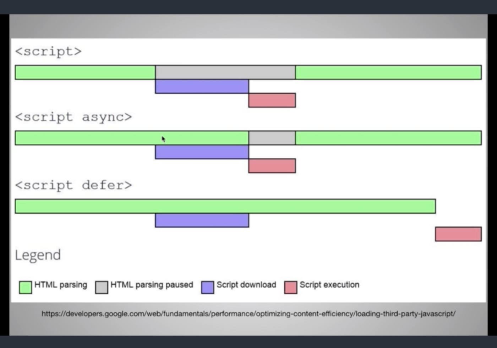

# [HTML5] script Tag 新增的屬性：async, defer 差異
# 非同步正夯

https://www.udemy.com/the-complete-junior-to-senior-web-developer-roadmap/
最近才得知 HTML5 中對於 script Tag 新增了 async , defer 兩個屬性。
大略查了一下差異，很容易就清楚了。
如上圖所示，差異如下：
一般的 script 寫法，整個網頁會 被暫停 ， 直到 test.js 下載並執行完 ，網頁載入才繼續。
1
<script src="test.js" ></script>
使用 defer ，網頁載入 不會停下 ， test.js 會在背景下載 ，直到 DOMContentLoaded 再執行 test.js 。
1
<script src="test.js" defer ></script>
使用 async ， 網頁繪製不會停下 ， test.js 在背景下載 。 下載後會先執行 ，並且 html 可以繼續載入 。
1
<script src="test.js" async ></script>
使用 async+defer ， 網頁繪製不會停下來 ， test.js 會在背景下載 ， 但是不會馬上執行 。要直到整個頁面載入，才會非同步的執行 test.js。
1
<script async defer src="test.js"></script>
# 使用時機
async 與 defer 在載入的行為是沒有差異的，都是非同步處理。
唯一要注意的是 async 的使用。
因為 async 的特性 — 加載結束後馬上執行 。
若是使用於有 dependence 的狀況，可能會有預期以外的狀況發生。
我的話，會使用在與 html 沒有太多關聯性、互不影響的情況來加速頁面的載入與執行。
例如：單獨的背景運算、google analysis、或是其他無關 html 的前處理。